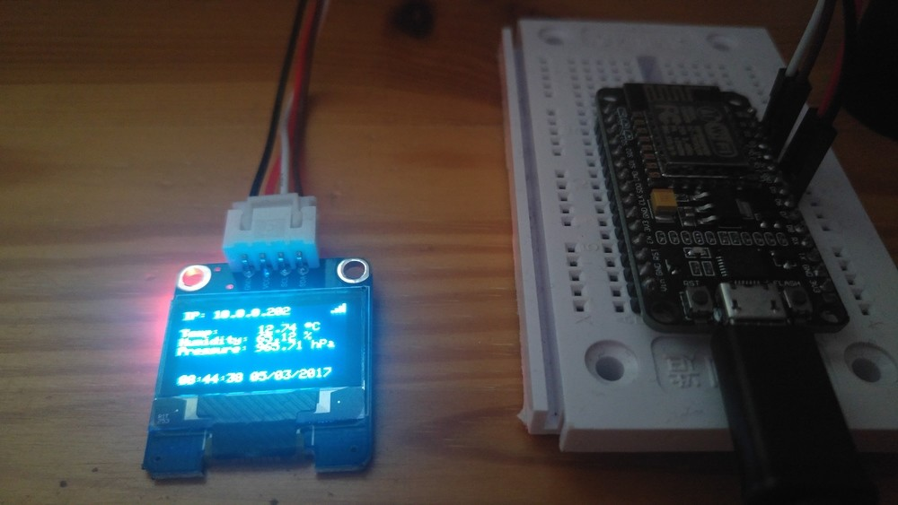

Ein einfaches Info-Display kann recht schnell erreicht werden. Es reicht ein ESP8266 und ein Display welches über I²C angesprochen werden kann. In diesem Aufbau wurde mittels eines ESP8266 Boards ein Display mit SSD1306 Chip über I²C mit Daten von OpenWeather befüllt.
Umsetzung
Für die Umsetzung muss man
- das I²C Display über den ESP8266 ansteuern
- den ESP8266 mit dem eigenen WiFi verbinden
- Daten von OpenWeather abrufen.
WiFi mit ESP8266
Jeder der schon einmal einen ESP8266 verwendet hat, wird sicherlich auch schon einmal das primäre Merkmal des ESP8266-Chips verwendet haben - das Wlan-Modul.
|
|
Display
Um das Display über den ESP8266 anzusteuern, kann man bereits auf ein paar vorhandene Bibliotheken aufbauen. Verwendet man für das Projekt die PlatformIO-IDE, so muss man nur folgende Bibliotheken als Abhängigkeiten setzen:
|
|
Um das Display anschließend zu initialisieren sind folgende Zeilen notwendig:
|
|
Damit Wetterdaten angezeigt werden können, muss das Display zyklisch gelöscht
und die Daten wieder neu aufgebaut werden. Hierfür kann über clearDisplay()
zuerst das Display gelöscht und anschließend entsprechend über die
dazugehörigen Grafikfunktionen die Daten neu gezeichnet werden.
Für die Anzeige der Wetterdaten wurde folgender Code verwendet:
|
|

OpenWeather
Um Daten von OpenWeather abzurufen, muss man sich zuvor registrieren. Anschließend kann man in seinem Profil einen API-Key generieren, welchen man in der eigenen Anwendung verwenden kann.
OpenWeather besitzt für das Abrufen der Daten ein Rest-Interface. Dieses kann durch den ESP8266 leicht abgerufen werden:
|
|
Anschließend muss der empfangene Rest-String geparsed werden. Hierfür existieren unendlich viele Rest-Bibliotheken. Jedoch besteht die einfachste Variante darin, die notwendigen Daten einfach aus dem Rest-String herauszuschneiden.
|
|